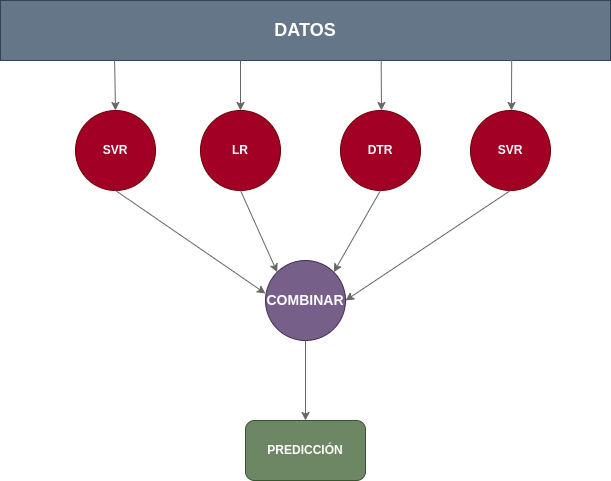

Ensamble de modelos#
El ensamblaje de modelos, también conocido como ensemble learning, es una técnica poderosa en el campo del aprendizaje automático que busca mejorar la precisión y robustez de los modelos individuales al combinar sus predicciones. En lugar de depender de un solo modelo, el ensamblaje utiliza múltiples modelos para realizar predicciones, aprovechando la diversidad de enfoques y la complementariedad entre ellos.
En primer lugar, existen varios métodos para implementar el ensamblaje de modelos. Uno de los enfoques más comunes es el bagging (Bootstrap Aggregating), que implica entrenar múltiples instancias del mismo tipo de modelo en subconjuntos aleatorios de datos y luego promediar o combinar sus predicciones. Por otro lado, el boosting es otra técnica popular que se centra en mejorar el rendimiento de modelos débiles sucesivamente, asignando pesos a las instancias mal clasificadas para que el próximo modelo se enfoque más en ellas.
En segundo lugar, los ensamblajes ofrecen una mayor capacidad para manejar la complejidad del problema y reducir el sobreajuste. Al combinar modelos que pueden tener fuerzas y debilidades diferentes, se logra una generalización más robusta, mejorando así la capacidad del ensamblaje para adaptarse a patrones complejos y desconocidos en los datos.
En tercer lugar, cabe destacar que los ensamblajes pueden utilizarse con una variedad de modelos base, desde árboles de decisión hasta redes neuronales y modelos lineales. Esto proporciona flexibilidad para adaptarse a diferentes tipos de datos y problemas, permitiendo la creación de ensamblajes personalizados según las características del conjunto de datos y los objetivos del problema.
En cuarto lugar, la interpretabilidad del ensamblaje a menudo es un desafío, ya que la combinación de múltiples modelos puede hacer que sea más difícil entender el razonamiento detrás de las predicciones. Sin embargo, existen técnicas para abordar este problema, como la visualización de importancia de características y la inspección de la contribución de cada modelo al conjunto.
Técnicas de ensamble#
Existen varias técnicas para ensamblar modelos, cada una con sus propias características y ventajas. Aquí se describen algunas de las técnicas más comunes:
Bagging (Bootstrap Aggregating): Esta técnica consiste en entrenar múltiples instancias del mismo tipo de modelo en diferentes subconjuntos aleatorios de datos creados mediante el muestreo con reemplazo (bootstrap). Esto reduce la varianza al promediar las predicciones de los modelos, lo que generalmente mejora la precisión y la robustez del ensamblaje.
from regression import calculate_error, get_train_test_validation
from sklearn.linear_model import LinearRegression
from sklearn.ensemble import BaggingRegressor
X_train, X_test, X_val, y_train, y_test, y_val = get_train_test_validation()
base_regressor = LinearRegression()
bagging_regressor = BaggingRegressor(base_regressor, n_estimators=100, random_state=42)
bagging_regressor.fit(X_train, y_train)
y_pred = bagging_regressor.predict(X_val)
calculate_error(y_val, y_pred)
---------------------------------------------------------------------------
UnboundLocalError Traceback (most recent call last)
Cell In[2], line 6
2 from sklearn.linear_model import LinearRegression
3 from sklearn.ensemble import BaggingRegressor
----> 6 X_train, X_test, X_val, y_train, y_test, y_val = get_train_test_validation()
8 base_regressor = LinearRegression()
10 bagging_regressor = BaggingRegressor(base_regressor, n_estimators=100, random_state=42)
File /mnt/Datos/proyectos/Especialidad BigDataIA/repositorios/sistemas_aprendizaje_automatico/apuntes_web/markdowns/sistemas_supervisados/regresion/modelos/../../../../code/regression.py:35, in get_train_test_validation(path)
33 def get_train_test_validation(path=None):
---> 35 X, y = get_X_y(path)
37 X_train, X_test, y_train, y_test = train_test_split(X, y, test_size=0.2, random_state=1)
38 X_train, X_val, y_train, y_val = train_test_split(X_train, y_train, test_size=0.25, random_state=1)
File /mnt/Datos/proyectos/Especialidad BigDataIA/repositorios/sistemas_aprendizaje_automatico/apuntes_web/markdowns/sistemas_supervisados/regresion/modelos/../../../../code/regression.py:15, in get_X_y(path)
13 if path:
14 PATH_TO_CSV = path
---> 15 df = pd.read_csv(PATH_TO_CSV + 'insurance_preprocesed.csv')
16 df = df.drop(['No'], axis=1)
17 X = df.copy().drop(['charges'], axis=1)
UnboundLocalError: cannot access local variable 'PATH_TO_CSV' where it is not associated with a value
Boosting: A diferencia del bagging, el boosting se centra en mejorar modelos débiles sucesivamente. Asigna pesos a las instancias mal clasificadas para que el próximo modelo se enfoque más en ellas. Mejora la precisión del modelo al enfocarse en los errores cometidos por modelos anteriores, lo que puede resultar en un rendimiento superior en comparación con un solo modelo.
from regression import calculate_error, get_train_test_validation
from sklearn.linear_model import LinearRegression
from sklearn.ensemble import AdaBoostRegressor
X_train, X_test, X_val, y_train, y_test, y_val = get_train_test_validation()
base_regressor = LinearRegression()
adaboost_regressor = AdaBoostRegressor(base_regressor, n_estimators=50, random_state=42, learning_rate=0.1)
adaboost_regressor.fit(X_train, y_train)
y_pred = adaboost_regressor.predict(X_val)
calculate_error(y_val, y_pred)
Stacking: En esta técnica, varios modelos base se entrenan de manera independiente, y luego un modelo meta o “combinador” se entrena para realizar predicciones utilizando las salidas de los modelos base como características. Puede capturar patrones más complejos y aprender a combinar las fortalezas de diferentes modelos base.
from regression import calculate_error, get_train_test_validation
from sklearn.linear_model import LinearRegression
from sklearn.ensemble import RandomForestRegressor, GradientBoostingRegressor
from sklearn.ensemble import StackingRegressor
X_train, X_test, X_val, y_train, y_test, y_val = get_train_test_validation()
base_regressors = [
('random_forest', RandomForestRegressor(n_estimators=10, random_state=42)),
('gradient_boosting', GradientBoostingRegressor(n_estimators=50, random_state=42)),
# Agrega más modelos base según sea necesario
]
meta_regressor = LinearRegression()
stacking_regressor = StackingRegressor(estimators=base_regressors, final_estimator=meta_regressor)
stacking_regressor.fit(X_train, y_train)
y_pred = stacking_regressor.predict(X_val)
calculate_error(y_val, y_pred)
Voting: Este enfoque implica combinar las predicciones de múltiples modelos base y tomar una decisión basada en un voto mayoritario (clasificación) o promedio (regresión). Tiene como ventaja que es simple de implementar y puede ser efectivo cuando se tienen modelos diversificados.
from regression import calculate_error, get_train_test_validation
from sklearn.linear_model import LinearRegression
from sklearn.ensemble import RandomForestRegressor, GradientBoostingRegressor
from sklearn.ensemble import VotingRegressor
X_train, X_test, X_val, y_train, y_test, y_val = get_train_test_validation()
regressors = [
('random_forest', RandomForestRegressor(n_estimators=10, random_state=42)),
('gradient_boosting', GradientBoostingRegressor(n_estimators=50, random_state=42)),
('linear_regression', LinearRegression())
# Agrega más regresores según sea necesario
]
voting_regressor = VotingRegressor(estimators=regressors)
voting_regressor.fit(X_train, y_train)
y_pred = voting_regressor.predict(X_val)
calculate_error(y_val, y_pred)
Blending: Similar al stacking, pero en lugar de utilizar un modelo meta global, se divide el conjunto de datos en conjuntos de entrenamiento y validación. Los modelos base se entrenan en el conjunto de entrenamiento, y luego se evalúan en el conjunto de validación. Las predicciones de los modelos base se combinan usando un modelo sencillo. Es menos complejo que el stacking y puede ser útil para conjuntos de datos pequeños.
from regression import calculate_error, get_train_test_validation
from sklearn.linear_model import LinearRegression
from sklearn.ensemble import RandomForestRegressor, GradientBoostingRegressor
X_train, X_test, X_val, y_train, y_test, y_val = get_train_test_validation()
regressor1 = RandomForestRegressor(n_estimators=10, random_state=42)
regressor2 = GradientBoostingRegressor(n_estimators=50, random_state=42)
regressor3 = LinearRegression()
regressor1.fit(X_train, y_train)
regressor2.fit(X_train, y_train)
regressor3.fit(X_train, y_train)
pred1 = regressor1.predict(X_val)
pred2 = regressor2.predict(X_val)
pred3 = regressor3.predict(X_val)
blended_predictions = (pred1 + pred2 + pred3) / 3
calculate_error(y_val, blended_predictions)
Como podemos ver, aplicar cada una de las técnicas de predicción usando ensamble de modelos mejora enormemente los resultados, pero como siempre, habría que afinar los hiperparámetros del modelo de ensamble y de los distintos modelos utilizados.